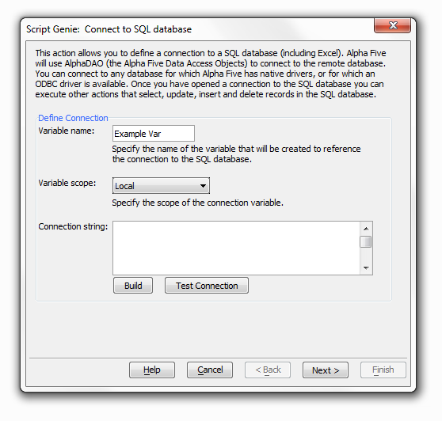

Connect to SQL Database
|
Procedure
Enter the name of the variable that will be created to reference the connection to the SQL database in the Variable name control.
Select the scope of this variable from the Variable scope list. The options are:
"Local" - visible only to this Action Script
"Shared" - the variable is available to scripts based on the underlying form or browse
"Global" - the variable is available to other scripts

-
Enter the required connection string into the Connection string control. If you do not have a ready-made connection string, you may click Build to display the Create SQL Connection String dialog.
-
Optionally, click Test Connection to verify that the connection string was properly defined.
-
Click Next >.
-
Optionally, enter a comment that describes the action.
-
Click Finish.
Limitations
Desktop applications only.
See Also
Close Connection to SQL Database